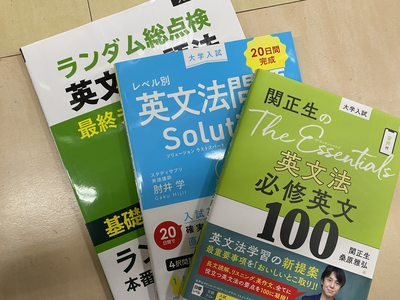
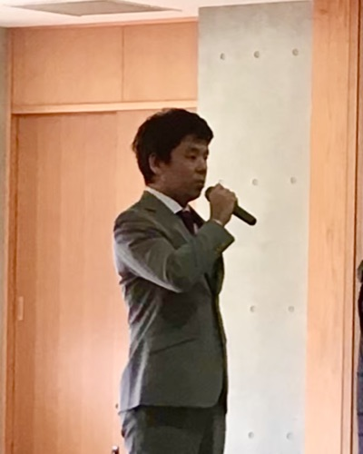
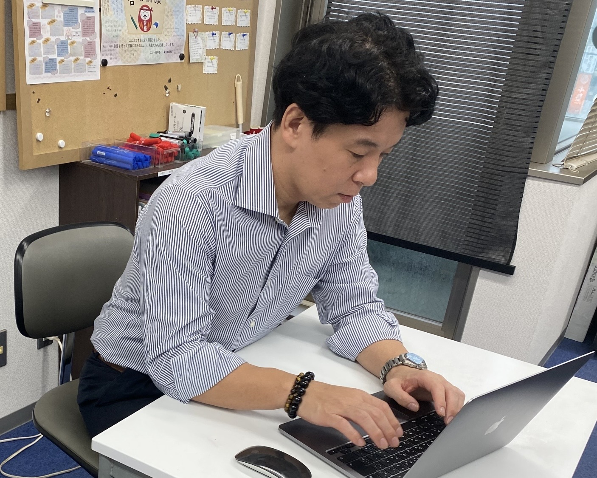
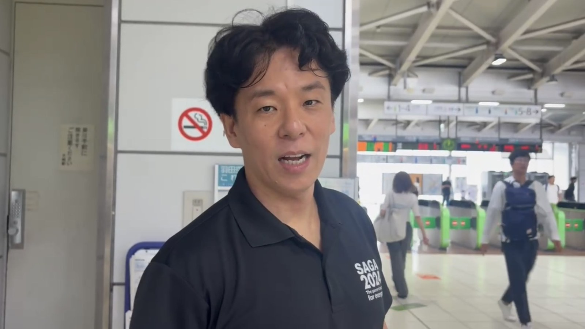
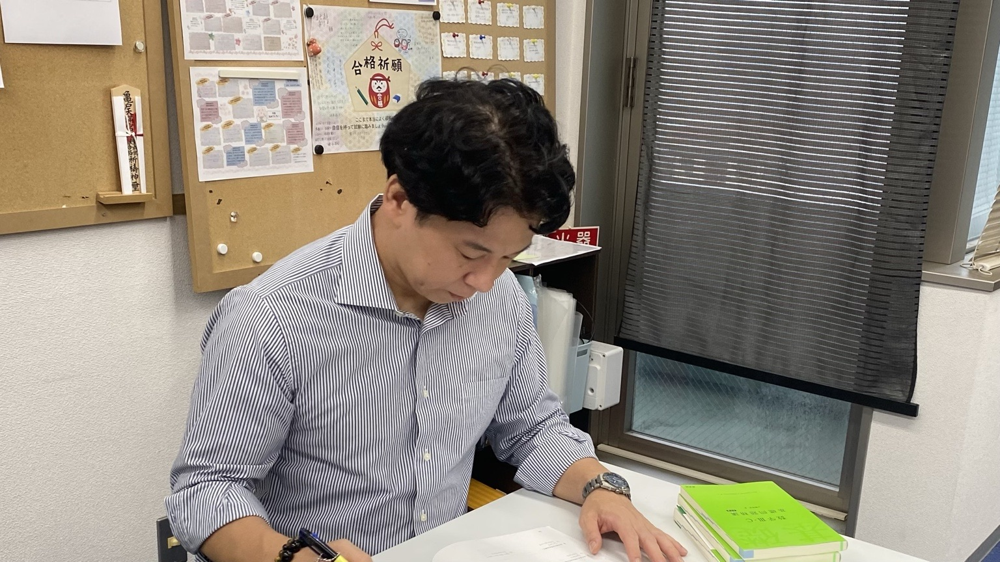
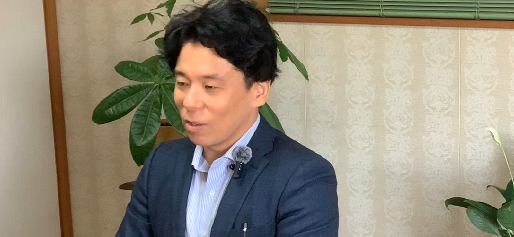

第9回
英作文が苦手な人へ｜難しい日本語をそのまま訳さない勉強法
英作文で手が止まる中学生・高校生へ。難しい日本語を簡単に整理し、知っている単語と文法で正確に伝える勉強法と3つの手順を、REVIA代表・原田靖也が紹介します。
続きを読むREVIA column
REVIA代表・原田靖也が、勉強や受験のこと、教育への考え、地域での活動や日々の出来事を通して感じたことを綴ります。
Latest

第9回
英作文で手が止まる中学生・高校生へ。難しい日本語を簡単に整理し、知っている単語と文法で正確に伝える勉強法と3つの手順を、REVIA代表・原田靖也が紹介します。
続きを読む
第8回
2026年度に拡充された高校生等奨学給付金と授業料支援、兵庫県の申請期限を紹介。費用で進路を諦める前に確認してほしいことを、REVIA代表・原田靖也が綴ります。
続きを読む第7回
2027年度「トビタテ！留学JAPAN」高校生等対象プログラムの募集コース、奨学金、応募日程と、留学前に準備しておきたいことをREVIA代表・原田靖也が紹介します。
続きを読む
第6回
2027年度大阪府公立高校入試の最新情報を確認しながら、内申点が伸びないときの原因分析と受験戦略、偏差値だけに頼らない志望校選びについて、REVIA代表・原田靖也が解説します。
続きを読む第5回
2027年度の国公立大学入試の最新情報を整理し、一般選抜・総合型選抜・学校推薦型選抜の選び方と、高校1・2年生が今取り組みたい英語・数学の勉強について、REVIA代表・原田靖也が解説します。
続きを読む
第4回
志望校を決める時期と、本番までの戦略や心の準備について。一人の教え子の事例と指導経験をもとに、REVIA代表・原田靖也が考察します。
続きを読む
第3回
介護タクシーの開業を目指す人との出会いから、経験や強みを組み合わせて挑戦することの面白さを綴ります。
続きを読む
第2回
2学期の模試やテストをどう捉え、結果から次の行動へつなげるか。大学受験生から中学1・2年生まで、学年別の秋のチェックポイントをお話しします。
続きを読む第1回
夏休みに思うように勉強できなかった人へ。現在地と期限を確認し、残された時間から学習を立て直すための7つのポイントをお話しします。
続きを読む